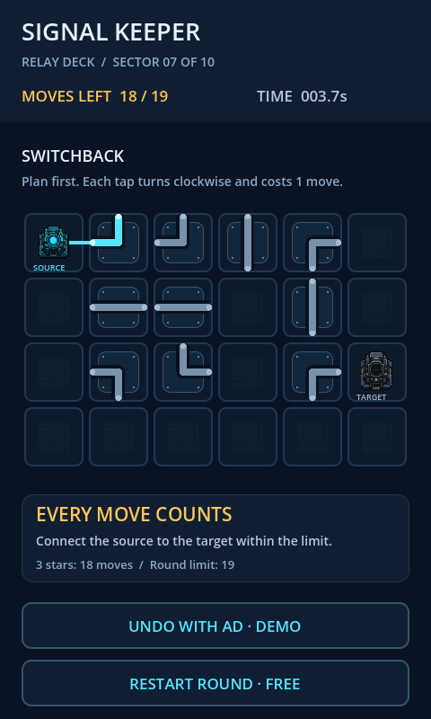

Signal Keeper is a compact logic puzzle game where every connection matters.
You are responsible for restoring a damaged relay station and guiding a signal from its source to the receiving terminal. Rotate relay nodes, create valid connections, and keep the transmission stable while dealing with interference and limited repair resources.

Explore a dark relay station presented in crisp pixel art, with cyan signal paths, amber warnings, and red interference states.
Rotate industrial relay nodes to build a continuous path between the signal source and receiver.
A completed route is only part of the challenge. Watch the signal status and react when interference threatens the connection.
Use your available repair resources carefully when parts of the relay network become unstable or damaged.
Clear visual feedback helps you identify active connections, unstable relays, damaged components and valid interaction points.
Designed around short, focused challenges that reward observation, planning and experimentation.
Explore a dark relay station presented in crisp pixel art, with cyan signal paths, amber warnings and red interference states.
Route signal currents across diverging conduits, terminal junctions, and high-voltage transmission relays with pinpoint precision.
Achieve optimal 3-star clearance on each sector by solving networks in minimum turns, mastering route layouts, and perfecting timing.
Call in emergency move resets and rewarded power overhauls via integrated Petal relay backups to rescue critical sectors from failure.
Master the six essential rules to restore transmissions and keep the array online.
Identify the signal source and receiver.
Select and rotate the relay nodes.
Build a valid route through the network.
Watch the signal stability and remaining repair resources.
Respond to interference and damaged connections.
Successfully deliver a stable signal to complete the relay test.
Enter the relay station, read the signal and keep it alive.
Click or tap the circuit tiles below to rotate them clockwise. Connect the glowing Source on the left to the Receiver on the right to complete the circuit and activate the pulse!
Core components and game systems included in the launch build:
Logic-based relay connection puzzles engineered with rigorous parity and routing limits.
Rotatable signal relay system with tactile feedback and clockwise 90-degree step increments.
Dynamic signal stability checks, route illumination, and interference state handling.
Repair-resource management with optional Huawei Petal Ads rewarded moves reset.
Multiple relay, transmitter and receiver states with active and passive telemetry modes.
Industrial pixel-art visual design with bespoke industrial station tilesets and UI overlays.
Reset, pause, retry, success and failure systems, accompanied by full background ambient soundtrack and rotation SFX.
Provide the privacy policy URL and the privacy rights URL for app or atomic service review and client-side display in AppGallery Connect:
Full privacy policy disclosing offline gameplay data, minimal permissions (Internet only), Huawei Petal Ads SDK disclosure (OAID, non-personalized), minor protection, and data security.
Dedicated portal for users to exercise data subject rights: data deletion, OAID reset instructions for HarmonyOS/EMUI/Android, consent withdrawal, and guaranteed ≤15 working days SLA.